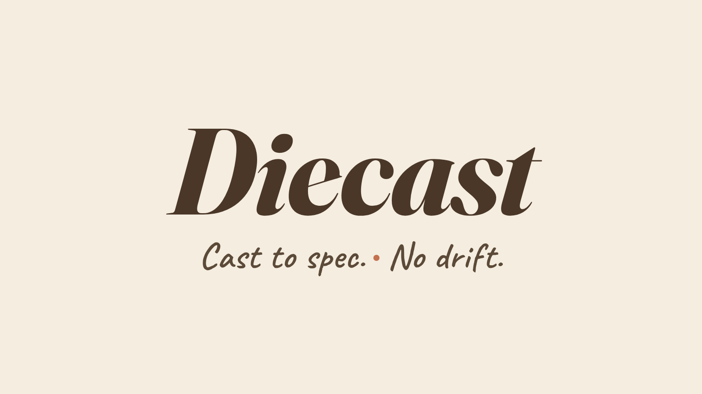

Opinionated agents, cast to spec from a die you control. An OSS workflow runtime for AI-assisted development on Claude Code.

Why this exists
Three things keep biting senior engineers shipping with AI:
Diecast doesn't fix the model. It fixes the workflow around the model.
The two layers
Opinionated agents
Cast from a spec. Paired with a checker. Same input shape → same output shape. Every run.
Reference shipment: the cast-crud family — a maker chain (orchestrator, schema, entity, repository, service, controller) plus its compliance checker and test agents. A worked example of the maker-checker pattern, end to end.
Workflow / orchestration
The chain that turns "I have a goal" into "the work shipped." Refine the requirement, decompose it, research it, plan it, run it, review it.
Parent-child delegation works whether or not you run the local server. The file-based contract is canonical.
The chain
Every step writes a known artifact. Every step suggests the next command. Drop in at the level you need.
Quick start
git clone https://github.com/sridherj/diecast.git ~/workspace/diecast
cd ~/workspace/diecast
./setup # installs cast-* skills + agents globally
cd ~/your-project
/cast-init # scaffolds docs/ and writes project CLAUDE.md
/cast-refine # refine a requirement
/cast-high-level-planner # phase it
/cast-orchestrate # run itStatus
Shipped at v1
- Workflow chain (Layer-2)
- Parent-child delegation, server or no server
- Presentation pipeline (narrative → assembler)
- Goals / tasks / runs CRUD via cast-server
cast-crudreference family/cast-init+ file conventions/cast-upgradewith local-mod preservation
Coming next
- v1.1 — Agent contracts schema, opt-in telemetry
- v1.2 — Evals harness for cast-* agents
- v2 — Linear / Jira / GitHub Issues adapters
- v2+ — Codex / Copilot multi-harness